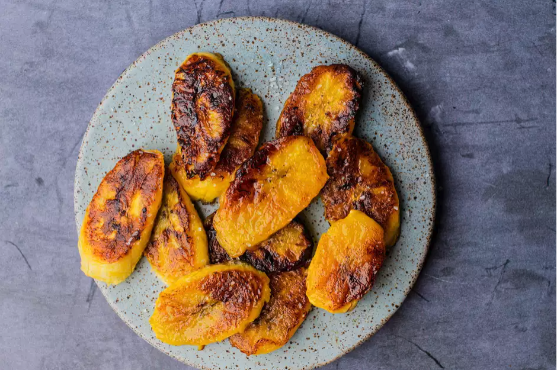

Description
Fried ripe plantains have a crispy, caramelized texture and irresistibly sweet taste. It's a ubiquitous Caribbean dish that is served with almost every meal, and it's enjoyed in other parts of the world as well. This is a quick and easy recipe that is sure to bring the taste of the Caribbean into your home.
Ingredients
- 2 ripe plantains
- 2 to 3 tablespoons oil (such as canola or vegetable oil), for frying
Preparation
- Gather the ingredients.
- Cut the peeled plantains into 1/4-inch-thick slices. Diagonally is preferred because it provides a larger surface for caramelization; it can be cut straight across into rounds.
- Drizzle just enough oil into a nonstick skillet to coat the bottom of the pan, and place it on medium heat.
When the oil begins to shimmer, but not smoke, add plantains (work in batches). Fry for 1 1/2 minutes on one side, flip and cook for 1 minute on the other side.
- Remove plantains from the pan and drain on paper towels.